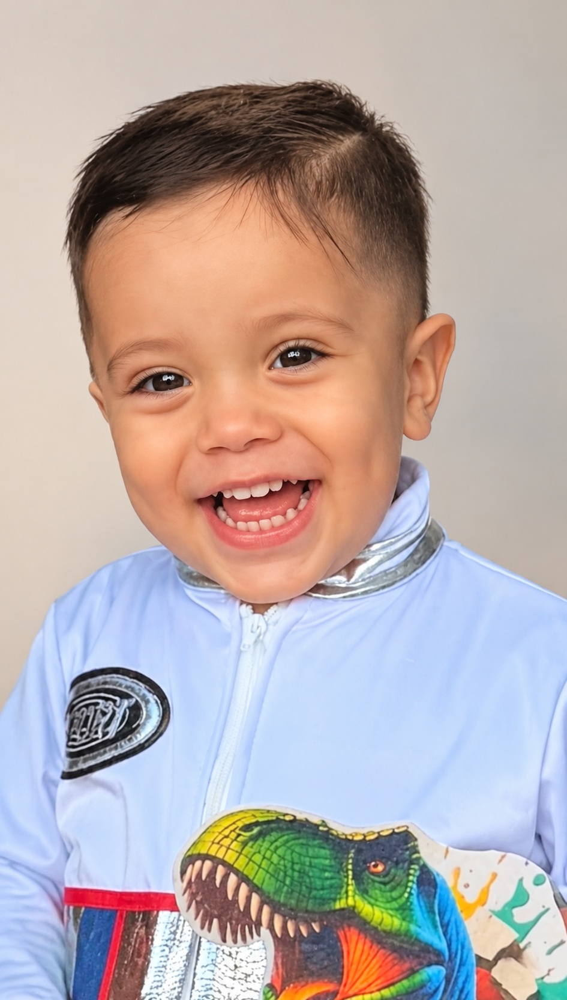

12:00 p.m.
Ceremonia
Mi Bautizo
Loya Naranjo

Señor, hoy me presentan ante ti para ser bañado con la gracia de tu amor.
Toma mi pequeño corazón, tómalo en tus benditas manos y jamás te separes de mí.
Yara Grisel Naranjo GarcíayJuan Manuel Loya Valverde
Paola Lizeth Mora PérezyEfraín Loya Valverde
12:00 p.m.
Ceremonia
2:00 p.m.
Celebración
Efectivo